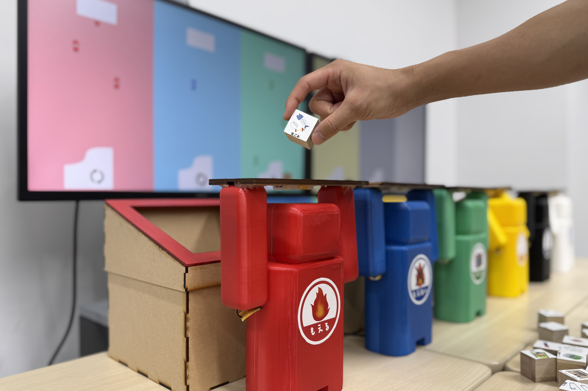
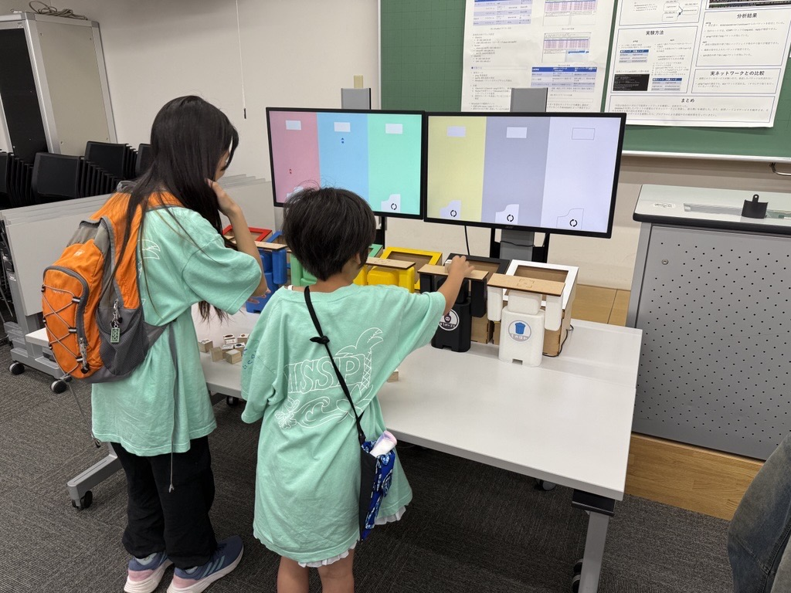
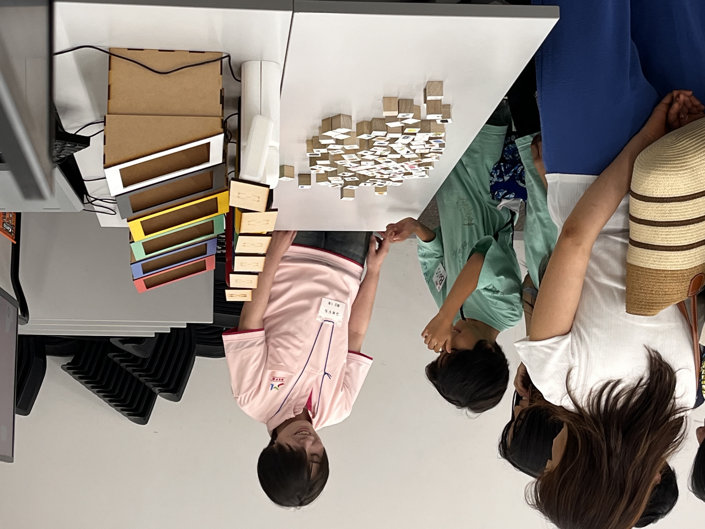
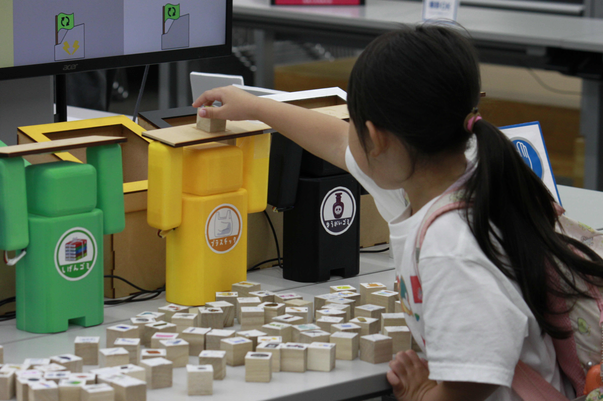
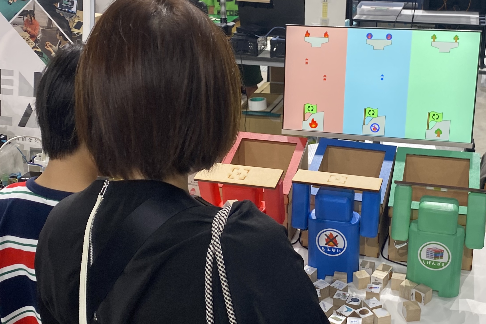
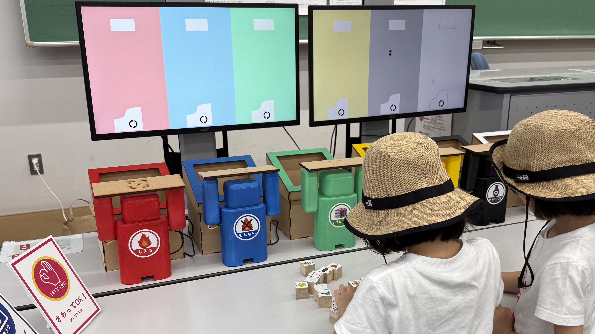
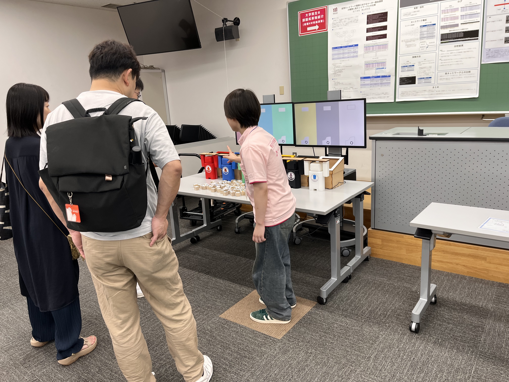

ゴミ箱の中には，ゴミたちの世界が広がっている．







Processing,Arduino,RFID,サーボモーター
本作品は，楽しみながら正しいゴミ分別を学ぶことができるインタラクティブシステムです．八王子市の基準に基づく６つの分別区分を用意し，ユーザーは100種類のゴミイラストが描かれたキューブを手に取ります．ゴミ箱の前には各分別区分の世界に入ってよいか判断する番人妖精が立っており，ユーザーがゴミキューブを番人妖精の手に載せると，選択したゴミが正しいか判定します．正解の場合は番人妖精がゴミ箱に投入し，誤っている場合は返却します． 本作品の特徴は「ゴミにはそれぞれの分別区分の妖精の魂が宿っている」という物語設定にあります．ゴミ箱の内部には妖精生成場が存在し，ゴミから魂が抽出され妖精として生まれ変わります．生成された妖精はリサイクル場へと移動し，リサイクル先の姿へ変化します．この一連の過程はアニメーションとして表現され，ゴミがどのように循環し生まれ変わるのかを視覚的に体験できるようにしました． 本作品は，単に分別の正誤を知らせるだけでなく，分別行動の意味を物語として提示することで，ユーザーの自律的な分別意識を育むことを目的としている．
この作品は，ゴミ分別の社会課題を解決するために3人グループで制作を行いました．この作品は，オープンキャンパスで展示を行いました．私は，実装，アイデアだし，デバイスの側づくりを行いました．
番人妖精の手にはRFIDリーダが付いています．ゴミキューブの下にはNFCタグが貼り付けてあります．ゴミキューブを番人妖精の手に乗せるとArduinoで情報を取得し，その情報を元に分別が合っている場合はゴミ箱側にサーボモータを動かし，誤っている場合は体験者側にモータを動かします． 正解した場合は，Processingとシリアル通信を行い，Processingでアニメーションを再生します．